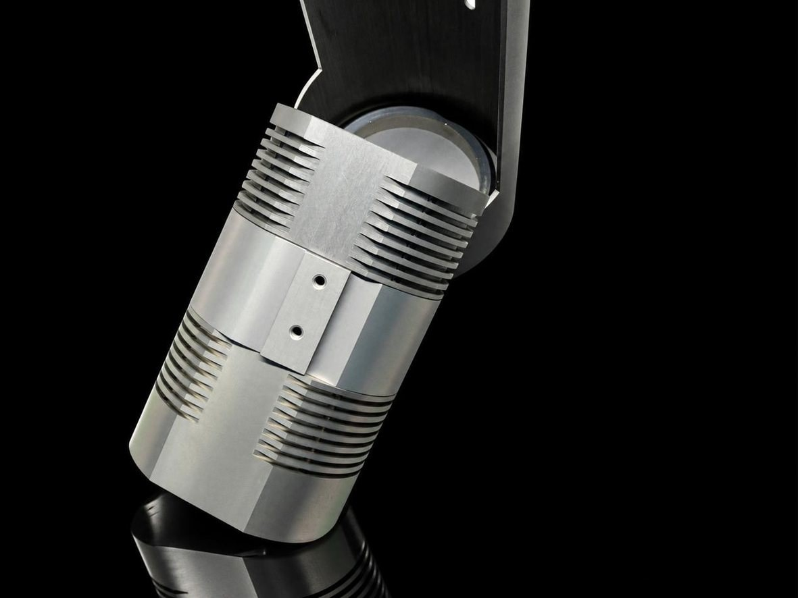

Наши работы
Материалы и детали, с которыми мы работаем
Реальные фото из процесса и производства, не стоковые. Кейсы клиентов добавим по согласованию.
Пример работы
Детали после токарно-фрезерной обработки
 Реальные детали
Реальные детали
Деталь на фото
Корпус гидроблока
Что видноМелкая резьба на открытом торце, продольные пазы с отверстиями на концах, фланец с отверстиями, расточенная внутренняя полость
ТехнологияТокарно-фрезерная обработка
МатериалАлюминиевый сплав Д16 (2024)
ПокрытиеБез покрытия
ДопускСтандартный ±0,025 мм; до ±0,01 мм на критичных размерах
Деталь на фото
Крышка насоса
Что видноМногоуровневые карманы с тонкими рёбрами и стенками, площадки с отверстиями, боковой выступ на кромке
ТехнологияТокарно-фрезерная обработка
МатериалАлюминиевый сплав Д16 (2024)
ПокрытиеБез покрытия
ДопускСтандартный ±0,025 мм; до ±0,01 мм на критичных размерах
Деталь на фото
Хомут
Что видноСтупенчатый блок с двумя поперечными отверстиями
ТехнологияФрезерная обработка
МатериалАлюминиевый сплав Д16 (2024)
ПокрытиеБез покрытия
ДопускСтандартный ±0,025 мм; до ±0,01 мм на критичных размерах
Пример работы
Детали прожектора

Прожектор в сборе
Партия деталей
Корпус прожектора
Что видноКорпус с поперечными прорезями-рёбрами на поворотном кронштейне
ТехнологияТокарно-фрезерная обработка
МатериалАлюминиевый сплав Д16 (2024)
ПокрытиеТвёрдое анодирование
ДопускСтандартный ±0,025 мм; до ±0,01 мм на критичных размерах
Партия1250 шт.
Наведите курсор на деталь — справа откроется карточкаНажмите на деталь — ниже откроется карточка
Корпус из Д16, электрополировка
Для корпуса обычно подходят
Корпус
Что видноКорпус с проушиной и отверстиями; на торце цилиндрической части пять отверстий
ТехнологияФрезеровка ЧПУ
Материал и покрытиеАлюминий Д16 (2024) — электрополировка
Партия100 шт.
Точность (ориентир)стандартный ±0,025 мм; до ±0,01 мм на критичных размерах, уточняется по чертежу
Что обычно делаютКорпусные детали, кронштейны, пресс-формы и сложные узлы
КонтрольВходящие материалы, первая деталь, межоперационный и финальный контроль партии
На фото: вал из стали 40Х, никелирование
Для вала обычно подходят
Вал
ТехнологияТокарная обработка ЧПУ
Материал и покрытиеСталь 40Х (AISI 5140) — никелирование, партия 300 шт.
Точность (ориентир)высокая, шероховатость от Ra 0,4 (ГОСТ 2789-73); диаметр до 500 мм, длина до 2000 мм
Что обычно делаютВалы, оси и резьбовые компоненты
КонтрольВходящие материалы, первая деталь, межоперационный и финальный контроль партии; для валов — контроль резьб и посадок
На фото: угловой кронштейн
Для кронштейна обычно подходят
Кронштейн
Что видноУгловой кронштейн с ребром жёсткости и отверстиями
Технология5-осевая фрезеровка
Материал и покрытиеТитан Grade 5 (ВТ6) — пассивация, партия 30 шт.
Точность (ориентир)стандартный ±0,025 мм; до ±0,01 мм на критичных размерах (5-осевая обработка), уточняется по чертежу
Что обычно делаютКронштейны, корпусные детали и сложные узлы
КонтрольВходящие материалы, первая деталь, межоперационный и финальный контроль партии
Партия фланцевых втулок
Для втулки обычно подходят
Втулка
Что видноФланцевые втулки
ТехнологияТокарная обработка ЧПУ
Материал и покрытиеСталь 20Х2Н4А (AISI 3310)
Партия450 шт.
Точность (ориентир)высокая, шероховатость от Ra 0,4 (ГОСТ 2789-73)
Что обычно делаютВтулки, штуцеры, ниппели и оси
КонтрольВходящие материалы, первая деталь, межоперационный и финальный контроль партии
Фланец в виде гриба
Для фланца обычно подходят
Фланец
Что видноДиск со ступицей: резьба в центральном отверстии, пять отверстий в выточке на торце, боковое отверстие
ТехнологияТокарно-фрезерная обработка
Материал и покрытиеСталь 40Х (AISI 5140) — без покрытия
Партия50–10000 шт.
Точность (ориентир)по чертежу; критичные размеры проверяются на первой детали
КонтрольВходящие материалы, первая деталь, межоперационный и финальный контроль партии
На фото: крепёж из нержавеющей стали
Для крепежа и фитингов обычно подходят
Крепёж и фитинги
ТехнологияТокарная обработка ЧПУ и холодная штамповка
Материал и покрытиеНержавеющая сталь: A2 (08Х18Н10), A4 (08Х17Н13М2); углеродистая сталь с покрытием (цинк, чернение), титан, латунь.
Пример: латунный фитинг C36000 (ЛС59-1) — никелирование по запросу, партия 500–50000 шт.
Пример: латунный фитинг C36000 (ЛС59-1) — никелирование по запросу, партия 500–50000 шт.
Точность (ориентир)головка и привод ±0,02–0,05 мм; резьба ISO (ГОСТ 24705-2004), поле допуска 6g/6H (ГОСТ 16093-2004) стандартно
КонтрольВходящие материалы и первая деталь, далее выборочный контроль партии; резьба — калибрами проходной/непроходной
Для листовой детали обычно подходят
Листовая деталь
ТехнологияЛазерная резка, гибка с ЧПУ, штамповка
Материал и покрытиеНержавеющая сталь — без покрытия или пассивация. Пример: штампованная деталь, партия 5000–100000+ шт.
Точность (ориентир)лазерная резка ~±0,1–0,15 мм по контуру; гибка — угол до ±0,5°, толщина 0,5–12 мм
Партияштамповка — от ~2000 шт. (нужен индивидуальный штамп); резка и гибка — от единиц
КонтрольВходящие материалы, первая деталь, межоперационный и финальный контроль партии
Сварной кронштейн на плите
Для сварного узла обычно подходят
Сварной узел
Что видноКронштейн с ребром жёсткости на опорной плите, сварные швы, отверстия под крепёж
ТехнологияСварка (включая точечную) и сборка
Материал и покрытиеСталь, нержавеющая сталь, алюминий
Партия
Точность (ориентир)допуск шва — по стандарту (AWS D1.1 / ISO 13920, в РФ — ГОСТ Р ИСО 13920) и чертежу узла
Что обычно делаютСварные корпуса, кронштейны, рамы, монтажные узлы; сборка резьбовых вставок, запрессовка крепежа, проверка комплектности
КонтрольВходящие материалы, первая деталь, межоперационный и финальный контроль партии
На фото: корпус клапана с боковым патрубком и крышка резьбовая ступенчатая
Для пластиковых деталей обычно подходят
Инженерные пластики
Что видноКорпус клапана с боковым патрубком и крышка резьбовая ступенчатая
ТехнологияФрезеровка ЧПУ и токарная обработка
МатериалПолиамид, фторопласт
КонтрольВходящие материалы, первая деталь, межоперационный и финальный контроль партии
Это ориентиры по опыту нашего партнёра, а не готовый каталог: точные допуски, материал и покрытие подбираются под ваш чертёж и фиксируются в расчёте.